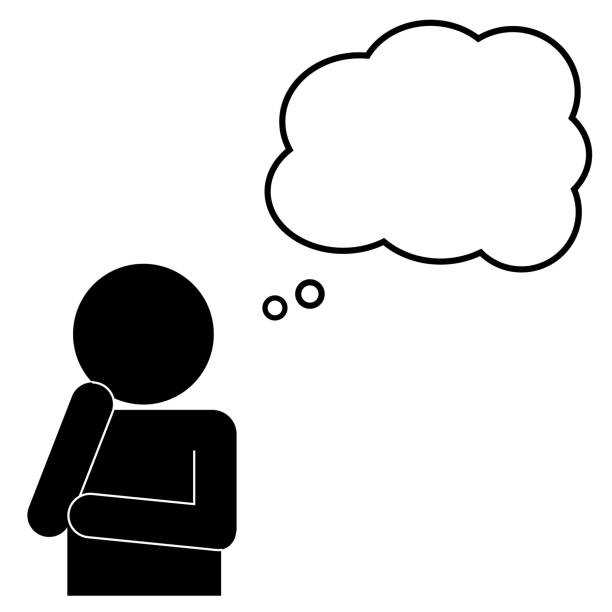

Conoce Mas

Toca la imagen para regresar al inicio
Curiosidades
Escuchar musica puede mejorar el estado de animo y ayudar a concentrarse.
El mariachi fue declarado Patrimonio Cultural de la Humanidad por la UNESCO en 2011.
El piano tiene 88 teclas.
Beethoven siguio componiendo aunque se quedo sordo.
Para escuchar y aprender
Spotify
YouTube
Wikipedia: Música